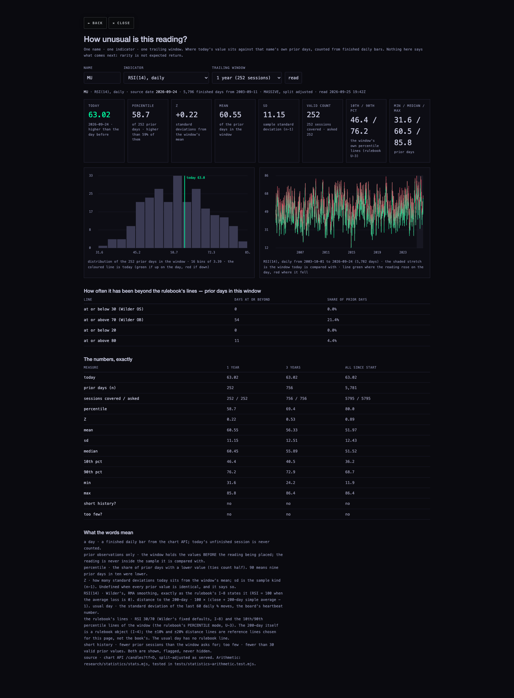
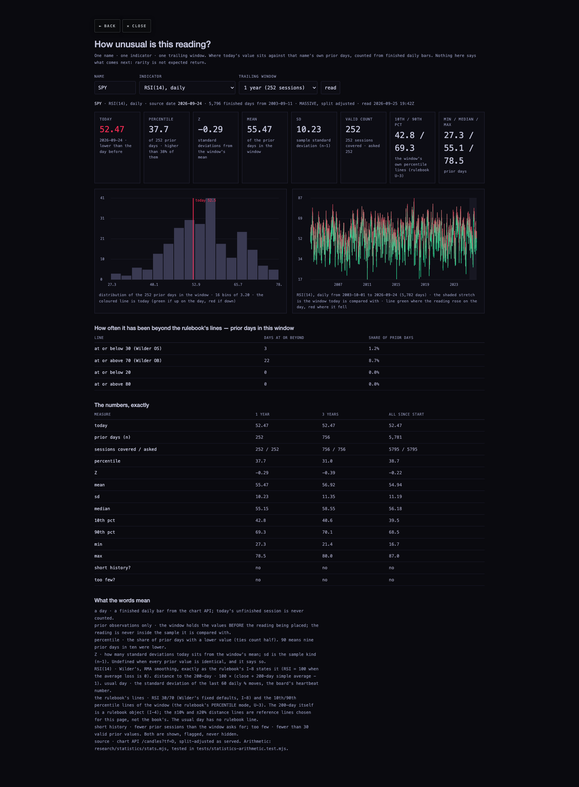
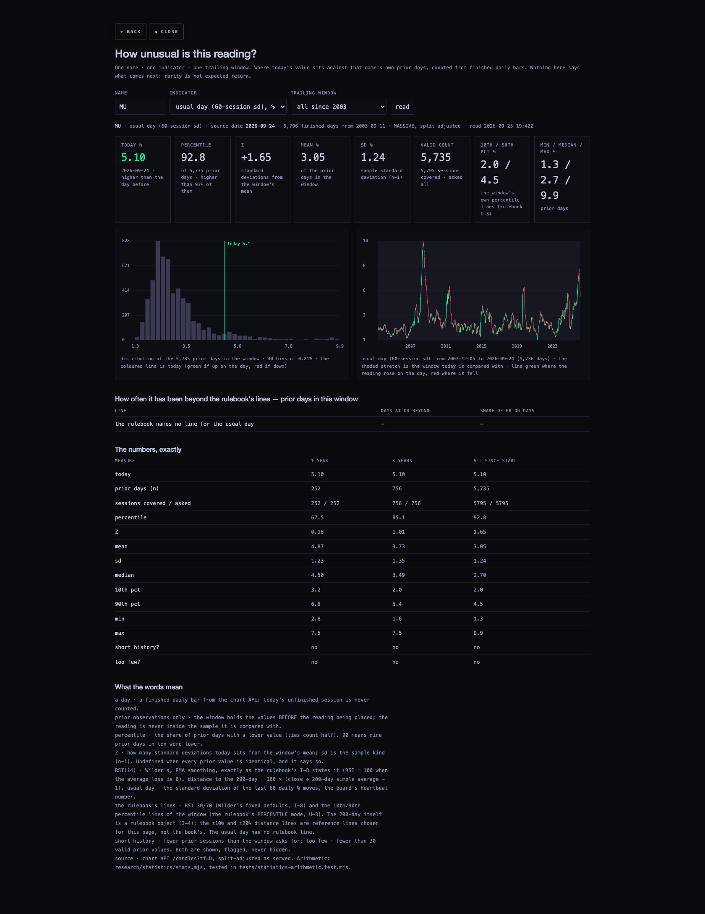
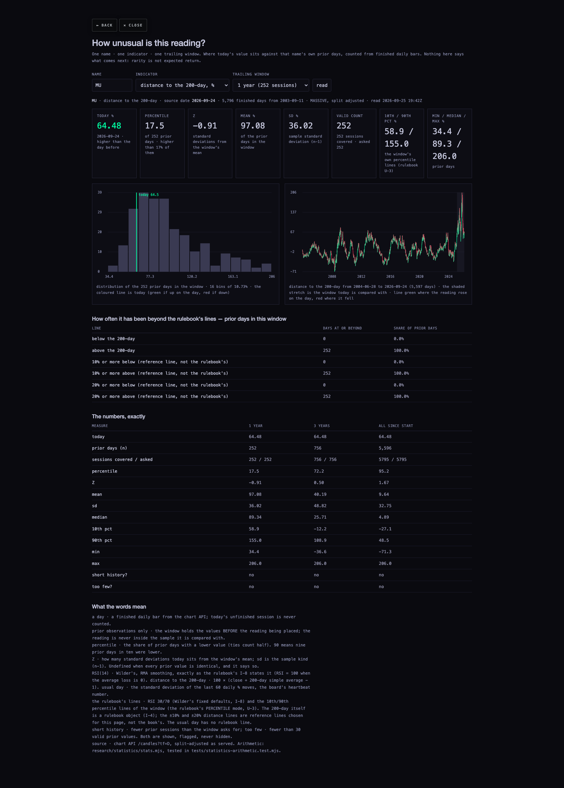
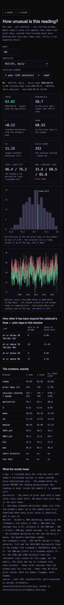
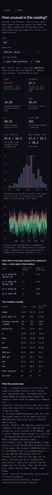

The rulebook's open decisions taken, v2 compiled, and the statistics package — real, on all 364 names
D7 in one sentence: the checkup's default is taken — the loop's first real-data run is the swing bake-off (SW-F against SW-R) on US large-cap daily bars from two feeds, then Sprint 3 "Condition on Regime"; it is the quant-loop owner's to run, it is specified below as study S3's precondition, and nothing in the book is promoted by anything on this page.
1 · The seven decisions, taken
The 22 September checkup left seven small decisions open, each with a default. All seven are taken at that default. Every edit they cause is tagged in the v2 text with its decision code, and the builder prints the full edit list when it runs, so the difference between v1 and v2 is exactly what the list says.
| decision | what was open | taken as | where |
|---|---|---|---|
| D1 | Reviews R7 and R8 (15 rulings, July and August) were written and saved but never copied back, so chapters 12–16 still showed their questions as open | Folded. Each block is now OPEN QUESTIONS — RESOLVED in the same form R2–R6 use; chapter 1's four questions carry their R1 answers; the footers that credited R6 with the Sprint 8 go-ahead now credit R7 | chapters 1, 12, 13, 14, 15, 16 |
| D2 | The Contract's T-13 EMITS clause could not say what a DEFINITION or a LAW card produces (found by the loop's compiler) | The loop's provisional fix adopted: object{NAME} for definitions, none for laws, both warning-flagged until ratified | The Contract, T-13 (v3) |
| D3 | bar.exDiv, bar.short, bar.basis used in chapters, missing from the registry | Registered: T-9, V-7, V-1 | Chapter 98 Part II; T-9's own table |
| D4 | The 21 September amendments A4–A6 would have registered three names that rulings deliberately left out | Listed as RESERVED (chan.midClaims, zone.asym, range.maxHeight), not registered | Chapter 98 Part II |
| D5 | Eight parameters registered twice (amendments B1–B8) | One owner each. Six rows in chapters 9, 13 and 15 are now marked "cited; owner V-24 / Q-9 / V-17". Two of the eight were not duplicates in the text: chapter 11 registers isw.n (a mirror of swing.n, its own name) and chapter 4 registers level.anchor, not diag.anchor — B3 and B4 were misreadings and are not applied | chapters 9, 13, 15 |
| D6 | Three sentences say the loop "proved" or "measured" the regime edge; the only evidence is synthetic | A tagged note after each (I-10, X-9, K-6): read as "on synthetic controls" until a real-data verdict exists | chapters 11, 13, 16 |
| D7 | The loop has never run on real prices (7 verdicts, all synthetic, lockbox untouched) | The default, as the sentence at the top says. Not a text change. Handed to the quant-loop owner with study S3 below | section 4 |
Added beyond the seven, and flagged as mine: a READ THIS FIRST block on v2's first page — education only, not advice, every rate untested on real prices. v1 carried no disclaimer of any kind while naming entries and price objectives; both September checks called that a publication blocker. It is one paragraph, tagged, and easy to strike if you disagree (decision A below).
2 · Rulebook v2 — the files
- RULEBOOK-v2.html — the HTML twin, 21 parts: front matter, the Contract, chapters 1–16, chapter 98, the new chapter 99 claims ledger (all 47 claims: statement, test status, which study tests it), and the edit list.
- RULEBOOK-v2.pdf — the same, A4, 176 pages (ESTIMATE from the page objects; the reader's count is authoritative), printed by headless Chromium, page numbers in the footer.
- drafts-v2/ — the edited chapter markdown, ready to be committed to the private rulebook repo as v2; src-v1/ — the v1 drafts exactly as fetched read-only from
aharveyrianhard-stack/scintilla-rulebook(drafts at commit 43f37c05; the repo has had no draft commit since 3 August, verified from its history). - build_v2.py — rebuilds all of it from src-v1 and prints every edit.
python3 build_v2.py. - v1 record, untouched:
My Drive/SCINTILLATRADINGRULEBOOK.pdf, 3 August 2026, 123 pages, sha256336e710e10c0447c288f447a0d15f1a3e0aa5a78aeaf702a3c82dd675548fbe2. Not copied, not modified.
Claims ledger, the honest summary: 47 rows, 0 tested. 36 market claims and 1 arithmetic claim read "untested on real prices"; 9 bookkeeping claims read "mechanical check not run"; 1 claim about people is descriptive. The status column can only change when the loop writes a verdict on real data.
3 · The statistics package
For every one of the 364 names the Hub follows (363 answered; BRK-B answers 404 from the chart API), three readings are placed in that name's own history: RSI(14) daily, distance to the 200-day, and the board's usual day (the 60-session standard deviation of daily moves). For each, over three trailing windows (1 year = 252 sessions, 3 years = 756, all since the name's history starts): the percentile of today's value among the prior days, the mean, the standard deviation, Z, the valid count, and how often the prior days sat beyond the rulebook's lines. Prior observations only — today's reading is never inside the sample it is compared with. No forward returns anywhere: rarity is kept apart from expected return, as SCI-6 asks.
Where each number comes from
| number | how it is made | where |
|---|---|---|
| a day | a finished daily bar from GET /candles?tf=D, split-adjusted as served; today's open session is never counted (source date 2026-09-24 at the time of the build) | chart API |
| RSI(14) | Wilder's, exactly as the rulebook's I-8 states it: U/D split of close changes, first average a plain mean of 14, then RMA; RSI = 100 when the average loss is 0 | stats.mjs · rsiWilder |
| distance to the 200-day | 100 × (close ÷ 200-day simple average − 1) | distanceToSma |
| usual day | sample standard deviation (n−1) of the last 60 daily % moves — the same formula as the heartbeat and the sigma detector | usualDay |
| percentile | share of prior days with a lower value, ties counting half | percentileOf |
| Z | (today − mean of the prior window) ÷ its sample sd; undefined and said so when sd is 0 or fewer than two prior values | describe |
| the rulebook's lines | RSI 30/70 (Wilder's fixed defaults, I-8) and the window's own 10th/90th percentile lines (the rulebook's PERCENTILE mode, U-3). The 200-day is a rulebook object (I-4) so "above/below" is the book's; the ±10% / ±20% distance lines are reference lines chosen here and labelled so. The usual day has no rulebook line | LEVELS |
| short history · too few | a window with fewer prior sessions than asked is flagged; fewer than 30 valid values is flagged "too few". Both shown, never hidden | describe |
| history start | a hole longer than a year between two bars means a different listing or a delisting; the analysis starts after the last such hole and the page says so. 45 names are affected (BE is the clearest: another company traded under the ticker 2003–2008, then nothing until Bloom listed on 2018-07-25) | historyCheck |
The thirteen you asked for first — the eight targets and the five funds
From research/statistics/data/summary.json, built 2026-09-25 19:33Z on bars through 2026-09-24. "pct · Z (1y)" is today's percentile and Z against the prior 252 sessions; "pct (all)" against the whole history.
| name | history | RSI(14) today | pct · Z (1y) | pct (all) | ≤30 / ≥70 share, all history | dist. to 200-day today | pct · Z (1y) | above 200-day, all | usual day today | pct · Z (1y) | flags |
|---|---|---|---|---|---|---|---|---|---|---|---|
| GOOGL | 2014-04-03 → 2026-09-24 · 3,138 days | 48.5 | 35.7 · -0.53 | 32.5 | 1.2% / 9.3% | 1.3% | 4.4 · -1.53 | 78.2% | ±2.19% | 66.7 · 0.76 | — |
| NBIS | 2024-10-21 → 2026-09-24 · 483 days | 58.3 | 67.9 · 0.38 | 60.3 | 0.0% / 12.6% | 49.0% | 48.8 · -0.34 | 99.6% | ±8.82% | 88.5 · 1.58 | short: 3y window not covered |
| AVGO | 2009-08-06 → 2026-09-24 · 4,310 days | 42.0 | 17.5 · -0.86 | 12.9 | 1.3% / 7.5% | -4.9% | 3.2 · -1.38 | 82.2% | ±2.53% | 10.3 · -1.25 | — |
| BE | 2018-07-25 → 2026-09-24 · 2,053 days | 56.2 | 53.6 · 0.03 | 66.0 | 5.3% / 8.4% | 32.0% | 15.1 · -1.11 | 54.1% | ±6.81% | 28.6 · -0.57 | history starts 2018-07-25 (listing break); 1 moves beyond ±50% |
| AMZN | 2003-09-11 → 2026-09-24 · 5,796 days | 44.2 | 29.4 · -0.58 | 23.3 | 2.1% / 8.4% | 3.6% | 34.5 · -0.27 | 69.9% | ±2.65% | 84.9 · 1.67 | — |
| VST | 2017-05-10 → 2026-09-24 · 2,357 days | 41.4 | 19.0 · -0.89 | 14.6 | 1.7% / 8.2% | -11.5% | 26.2 · -0.61 | 64.1% | ±2.58% | 0.0 · -1.74 | — |
| MU | 2003-09-11 → 2026-09-24 · 5,796 days | 63.0 | 58.7 · 0.22 | 80.0 | 3.3% / 8.7% | 64.5% | 17.5 · -0.91 | 55.7% | ±5.10% | 67.5 · 0.18 | — |
| WMT | 2003-09-11 → 2026-09-24 · 5,796 days | 48.2 | 37.7 · -0.32 | 36.3 | 3.1% / 7.4% | -9.3% | 7.5 · -1.71 | 65.0% | ±1.83% | 98.4 · 1.38 | — |
| SPY | 2003-09-11 → 2026-09-24 · 5,796 days | 52.5 | 37.7 · -0.29 | 38.7 | 1.6% / 7.1% | 6.8% | 30.2 · -0.26 | 77.8% | ±0.70% | 19.8 · -0.84 | — |
| QQQ | 2011-03-23 → 2026-09-24 · 3,900 days | 63.1 | 77.0 · 0.72 | 71.1 | 1.2% / 11.7% | 11.4% | 54.0 · 0.23 | 84.8% | ±1.26% | 68.7 · 0.28 | history starts 2011-03-23 (listing break) |
| DIA | 2003-09-11 → 2026-09-24 · 5,796 days | 36.4 | 6.0 · -1.92 | 7.2 | 1.9% / 8.1% | 2.2% | 7.1 · -1.55 | 77.0% | ±0.74% | 37.3 · -0.40 | — |
| IWM | 2003-09-11 → 2026-09-24 · 5,796 days | 34.1 | 2.0 · -2.13 | 4.7 | 2.3% / 4.8% | 2.2% | 1.6 · -2.40 | 69.0% | ±0.85% | 2.4 · -2.82 | — |
| SMH | 2003-09-11 → 2026-09-24 · 5,796 days | 61.0 | 60.7 · 0.26 | 73.2 | 1.7% / 6.9% | 22.0% | 22.6 · -0.74 | 71.2% | ±2.66% | 70.2 · 0.52 | — |
Across all 363 names, the same build: 50 read RSI at or below 30 today and 6 at or above 70; 106 sit at or below their own 10th percentile of the last year and 10 at or above their 90th; 182 close above their 200-day and 181 below. 16 names cannot fill a 3-year window and 5 cannot fill a 1-year window (they are flagged, not dropped). 36 names carry at least one stored daily move beyond ±50% inside their analysed history — real or a bad print, they are inside those names' usual-day and distance figures and the page says so on each.
What is visible in the screenshots






Screenshots were taken headless (never on Alan's screen) against a local copy of the branch. The chart API only accepts the scintillahub.ai origin, so in the screenshot browser its two routes were answered from the responses the API had served to this machine minutes earlier — the same bytes, not a different feed. The page as hosted asks the API directly. Console errors during the captures: none.
Reproduce
node --test tests/statistics-arithmetic.test.mjs # 10 hand-checked fixtures: percentiles, Z, RSI by hand, SMA, usual day, windows, levels node research/statistics/build.mjs --fetch # asks the chart API for all 364 names and rewrites data/summary.json python3 deliverables/20260925/rulebook-stats/rulebook-v2/build_v2.py # v1 drafts in, v2 drafts + HTML out, edit list printed
4 · Bridge to the quant loop — the five claims it can test first
Chosen because two of them need nothing but the readings this package already computes (S1, S2), two are plain counts against a number a classical author already quoted, so the "seed vs loop" column the book promised can exist (S4, S5), and one is the book's central claim and D7's whole point (S3) — it is specified here so the loop owner has it in the plan's own format, but it predicts, so it is the loop's to run and not this page's. Each spec follows the plan's five parts. None of them is run here beyond what section 3 already counts.
S1 · Percentile lines and the index problem — claim #42, card U-3
- inputs
- RSI(14) daily for SPY, QQQ, DIA, IWM and each of the 358 single names in the universe; the same finished bars this package used.
- history
- All since each name's history starts (after any listing break), 2003 for most; the last 252 sessions for the percentile lines.
- rule
- Two counts. (a) FIXED mode: the share of days each name's RSI sat at or below 30, index against members. (b) PERCENTILE mode: draw each name's 10th-percentile line from the prior 252 sessions and count how often the next session's reading falls under it, out of sample, one session at a time.
- verdict
- (a) index share minus the median member share, with a block-bootstrap interval (blocks of 20 sessions, because one selloff drops every name's RSI at once); the claim holds if the interval is clear of zero. (b) the fired share must sit inside 10% ± the binomial tolerance for the count; a line that fires 4% or 16% of the time is not self-calibrating.
- display
- One table, index rows lifted, members as a distribution: count first, then the share, then the interval; the exact request printed.
- what this package already says (MEASURED, descriptive only)
- All-history share of days at or below 30: SPY 1.61%, QQQ 1.24%, DIA 1.89%, IWM 2.30%, SMH 1.66%; the 358 members' median is 2.94% (10th–90th percentile of members 1.84%–4.61%). The book's sentence — the S&P's RSI almost never tags 30 — reads as "about half as often as a typical member", not "never". SPY's own 10th-percentile line over the last year is 42.8 where the median member's is 37.1. The intervals are not computed here; that is the study.
S2 · Are RSI and Williams %R one witness or two — claim #24, card I-2 (D8's second job)
- inputs
- RSI(14) and Williams %R(14) on the same daily bars for every name; %R needs the highs and lows the API already serves.
- history
- All since start, per name; the two halves of history reported separately.
- rule
- Per name: Spearman rank correlation of the two series; the agreement rate of their OS/OB states on the same day; the conditional lift — the share of RSI-OS days that are also %R-OS against the base share.
- verdict
- Descriptive stamp, no promotion: a pair whose correlation interval (effective sample size from the autocorrelation) sits above the ratified threshold is stamped ONE-WITNESS; otherwise independent. The threshold is the loop crew's to ratify; 0.9 is the placeholder in the checkup.
- display
- One row per name with the correlation, its interval and the stamp; a histogram of the correlations across the universe; the %R formula printed beside RSI's so the reader sees why they may be one thing.
S3 · Regime conditioning on real prices — claims #28, #37, #47 (cards I-10, X-9, K-6); D7's Sprint 3
- inputs
- Finished daily bars from two feeds (Massive and FMP through the chart API); the break chain (B-1) and the four regime states (X-2) as the loop compiles them — which needs the swing bake-off first (D7).
- history
- US large-cap daily, 2003 onward; the years from 2019 kept in the lockbox and spent only at promotion.
- rule
- Every confirmed break, its outcome at 10 and 20 bars in ATR units; the same outcome split by the state stamped at the break.
- verdict
- The book's claim survives only if the pooled interval includes zero and at least one state's interval excludes it, with the sign the chapter says; every regime-table cell counts as a trial (R7 X-R3). This predicts, so it runs the full ladder G0–G6 in the loop and nowhere else.
- display
- The plan's page: count, average, range, one-sentence verdict per state; the dead rules stay on the page. Until it runs, I-10, X-9 and K-6 keep their v2 note.
S4 · The throwback base rate against Bulkowski's 60% — claims #14 and #19, cards B-5 and A-1
- inputs
- Confirmed breaks of horizontal levels (the L and B cards) on daily bars; the level's price; the bars that follow.
- history
- All since start, both halves reported; per reference type and, once S3 exists, per regime state.
- rule
- The share of confirmed breaks where price returns to the level within
retest.clock(3 to 15 bars, every value reported, not the best one). - verdict
- A Wilson interval widened for overlap; the seed column shows Bulkowski's 60% beside the loop's count; a one-sided test against 0.5 answers A-1's "more often than not". Descriptive: no promotion depends on it.
- display
- Seed vs loop, side by side, with the clock on the row; the count first.
S5 · Do common gaps fill fast — claims #1 and #3, cards E-10 and E-11
- inputs
- Gap events (E-8) on daily bars, classified COMMON / BREAKAWAY / CONTINUATION / EXHAUSTION by the three lookups and the clock E-10 describes; the bars that follow.
- history
- All since start; both halves.
- rule
- For each gap, the number of bars until the gap is filled (or "not yet" at the end of the data); per class, the survival curve of time-to-fill.
- verdict
- Log-rank test COMMON against the other three; the share filled within
gap.fillClockwith an interval per class. Kruskal-Wallis on the 10-bar outcome across the four classes answers E-10. Descriptive. - display
- One table per class: count, share filled within k bars for k = 5, 10, 20, the interval; the survival curves drawn once, four lines, direct-labelled.
5 · What could be wrong
- Survivorship. The 364 are today's universe; names that failed are absent, so every historical frequency here is measured on companies that made it to today.
- Adjusted as they stand today. Splits rewrite old bars; an old reading is computed on today's adjusted series, not what printed then.
- Bad prints are inside the numbers. 36 names carry stored daily moves beyond ±50% after their history start (MS shows +152% on 2004-01-14, CORZ, QUBT, APLD several each). Some are real; some are provider errors. The page flags them per name; it does not remove them, because deciding which is which is a data-quality job for the chart-API owner, not an arithmetic one.
- Listing breaks were cut at one year by my rule. A hole longer than 365 days starts the history over. Shorter holes stay (QQQ's known 2004–2011 hole is longer and is cut; NOW's 2007 holes of 11–284 days stay). The number 365 is mine.
- The percentile lines are drawn from the same window they are judged against on the page. That is descriptive placement, which is what the page claims. Study S1 is where they get an out-of-sample test.
- Chapter 99's test status column is a judgment about what "tested" means: the loop's seven synthetic DRAFT verdicts are not counted as tests of any claim, following the checkup. If Alan counts them, six regime rows change from "untested" to "synthetic only".
- The v2 PDF page count is read from the file's page objects, not from a PDF reader (none is installed here): ESTIMATE 176.
- The markdown-to-HTML step is a small converter written for these drafts, not pandoc. Headings, lists, tables, code blocks, bold, italic and strike-through are handled; if a chapter uses something else it renders as plain text. I read the compiled T-13 block, the resolved blocks and the registry tables and they are right; I did not read all 176 pages.
- Merging this branch publishes the whole manuscript at scintillahub.ai/deliverables/…/rulebook-v2/, because the Hub serves its deliverables folder. See decision A.
6 · What I did not do
- Nothing pushed, deployed, merged or scheduled. No price table, saved setting, Equalizer, Linear issue or Notion page touched. The private rulebook repo was only read; the v2 drafts sit in this branch and are not committed there.
- No study was run that predicts. S1's descriptive numbers are counts; the intervals and the out-of-sample coverage test are not computed.
- No Opus executors were used: this session carries a standing no-subagents constraint, so one Fable session did the whole unit.
- The prototypes, the Indicator Lab, the Hub's rooms and the dashboard are byte for byte as they were. The scnav injector wanted to touch one unrelated page (deliverables/20260924/hub-glow); that change was reverted and is not in this branch.
- Test suite on the branch: 830 run, 823 pass, 5 fail — the same five that fail on hub/release-20260923 @ 6b43a52 (the Indicator Lab checkpoint, the one age function, saved review charts, readiness, xfeed-publish). The ten new tests pass.
7 · Decisions for Alan (three)
- A · Where v2 lives. Merging this branch as it stands publishes the full rulebook on the public Hub. Recommendation: merge the statistics package and this page, but move
rulebook-v2/to the private scintilla-rulebook repo (as drafts v2 and a compiled build) before the deploy, or leave it here only if you want the book public now. - B · The READ THIS FIRST block. It is not one of the seven decisions; I added it because both checks named the missing disclaimer as a publication blocker. Recommendation: keep it.
- C · The dirty histories. BRK-B answers 404, BE's ticker was reused, 36 names carry ±50% prints. Recommendation: hand the list in
summary.json(history.gaps,history.wild_examples) to the chart-API owner as a data-quality ticket; leave the page's disclosures as they are meanwhile.
Files: research/statistics/{index.html, stats.mjs, build.mjs, data/summary.json} · tests/statistics-arithmetic.test.mjs · deliverables/20260925/rulebook-stats/{RULEBOOK-STATS.html, screens/, rulebook-v2/}. Sources read: the 22 Sep checkup and its RULEBOOK-TESTS.json, R7 and R8, HOW-UNUSUAL, SIGMA-HISTORY @ c062a25, QUANT-LOOP-PLAN §1–5, the SCI-6 assignment as the dispatch states it (no Linear tool in this session). Push command for the coordinator: git push origin hub/rulebook-stats-20260925.